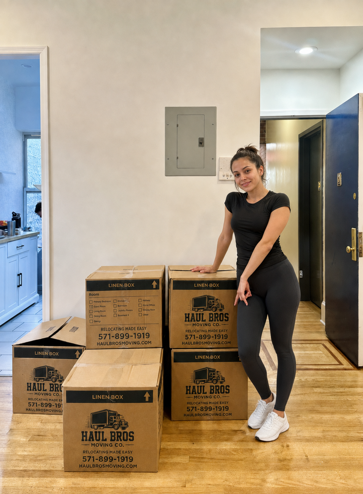

Moving to Manassas, VA: Your Complete Local Guide
Moving to Manassas, VA? Explore local neighborhoods, VRE, utilities, downtown logistics, moving tips, and how Haul Bros Moving Co LLC can help.

Moving to Manassas, Virginia? You’ll find a historic downtown, established residential neighborhoods, commuter rail, local parks, and easy access to major Northern Virginia roads. One detail matters right away: the City of Manassas is an independent city, separate from Manassas Park and surrounding Prince William County communities—even though many nearby addresses use “Manassas” as their mailing city. This guide helps you get oriented, plan a smooth move, and understand how Haul Bros Moving Co LLC can help.
In this guide
- Getting to know Manassas
- Manassas neighborhoods and nearby areas
- Getting around Manassas
- Parks, history, shopping, and community life
- Moving to Manassas: a practical checklist
- How Haul Bros Moving Co LLC can help
- Manassas moving FAQs
Getting to Know Manassas, VA
Manassas is a small independent city in Northern Virginia, surrounded by Prince William County. Its identity combines a historic downtown near the railroad station with suburban shopping corridors, residential neighborhoods, parks, and nearby Civil War history. Residents can find apartments, townhomes, older homes, and newer subdivisions in and around the city.
First, confirm which Manassas you mean
“Manassas” may describe more than one jurisdiction. The City of Manassas and City of Manassas Park are both independent cities; nearby addresses may instead be in Prince William County, even if the postal address says Manassas, VA. This affects city or county services, taxes, utilities, school assignments, and sometimes move coordination. Prince William County notes that residents of Manassas and Manassas Park are not liable for county taxes. Confirm your jurisdiction with the exact property address before setting up service or making a move plan.
That distinction also matters to movers: share the full street address and ZIP code for both homes, rather than just saying “Manassas.” Haul Bros Moving Co LLC serves Manassas and Northern Virginia communities on routes the company is authorized to serve; route and availability are confirmed for each estimate.
Manassas Neighborhoods and Nearby Areas
Manassas includes a range of communities and housing types. Neighborhood names can be informal, and mailing addresses do not always line up neatly with city boundaries. Use the City’s GIS or official jurisdiction tools to verify a property’s location.
- Historic Downtown / Old Town: The walkable core around Center Street and the railroad depot, with restaurants, shops, local events, the Manassas Museum, Harris Pavilion, and nearby residential streets. Historic buildings and tighter streets can require careful truck parking and a plan for loading access.
- Downtown-adjacent neighborhoods: Older residential blocks near the central business district offer a different feel from newer subdivisions. Ask about street parking, curb restrictions, alley access, and any historic-district requirements that apply to a property.
- West and northwest Manassas: Residential areas and commercial destinations extend toward Sudley Road, Route 234, and the Manassas National Battlefield area. Exact city limits vary by address, so verify whether a home is within the city or county.
- East and southeast Manassas: Homes and neighborhoods extend around Liberia Avenue, Mathis Avenue, and nearby corridors, with access to shopping and regional routes. Liberia House and grounds are a local historic site on the eastern side of the city.
- Nearby Manassas Park: A separate independent city northeast of Manassas. It has its own city services and a VRE station.
- Nearby Prince William County communities: Areas such as Bull Run, Yorkshire, and other suburban communities may have Manassas mailing addresses while being outside the City of Manassas. Check each property’s jurisdiction.
This is a general orientation rather than an official boundary or real-estate guide. For a specific home, confirm the city or county, services, school assignment, commute, and neighborhood rules directly with the appropriate agencies or property manager.
Getting Around Manassas
Roads and driving
I-66, Route 28, Route 234/Sudley Road, Liberia Avenue, Centreville Road, and Prince William Parkway connect Manassas with other parts of Prince William County and the wider Northern Virginia region. Local conditions can vary by time of day, construction, school schedules, and events. Build flexibility into move-day plans, especially when a move involves more than one address or a long drive across the region.
Ask your mover to confirm truck access for both homes. A large moving truck may not fit every private drive, parking garage, narrow street, or community entrance. Share gate codes, loading instructions, low-clearance areas, steep driveways, and any parking limits in advance.
VRE and buses
The Manassas VRE station is in Historic Downtown. Commuter parking rules, permits, availability, and overnight restrictions can change, so check current details with the City and Virginia Railway Express. Nearby Manassas Park has its own VRE station. OmniRide operates routes connecting parts of the county and Manassas Park; review current service maps and schedules for your address rather than assuming a stop is within walking distance.
For a commute, test the complete trip from the specific home: getting to a bus stop or rail station, parking or walking, schedule frequency, transfers, and the final leg. A station can look close on a map but still require a drive from some neighborhoods.
Moving near Historic Downtown
Historic Downtown is an active business and event district. Parking regulations and public spaces are designed for different uses and vehicles, and a commuter or visitor parking space may not accommodate a moving truck. Contact the property manager and check local signs and city guidance before moving day. If the building has a loading zone, elevator reservation, alley, or narrow street, include that information in your estimate request.
Parks, History, Shopping, and Community Life
Historic Downtown Manassas
The downtown district centers on the historic railroad depot and includes restaurants, independent shops, community events, the Manassas Museum, and Harris Pavilion. The farmers market and festivals add to the area’s local character. If you’re moving nearby, check event calendars and parking plans for your chosen date; busy events can affect access and curb availability.
Liberia House and grounds
Liberia House is an 1825 historic home on Portner Avenue. The grounds include short walking trails and picnic space; tours and house access are offered on a schedule. Check current hours and event details before visiting.
Manassas National Battlefield Park
The National Park Service manages Manassas National Battlefield Park, a regional historic landscape associated with the First and Second Battles of Manassas. The park has trails, landmarks, and visitor information. It is a nearby regional destination, not a neighborhood park inside the City of Manassas; consult the NPS website for current hours, conditions, and directions.
Parks and recreation
The City of Manassas Parks, Culture & Recreation department lists parks, athletic facilities, community programs, historic sites, and recreation spaces. Browse the city’s current facility directory for amenities, reservations, and seasonal information. Residents in surrounding Prince William County or Manassas Park may use different park systems and rules.
Shopping and daily services
Residents can find everyday shopping and services along major commercial corridors, including Sudley Road, Liberia Avenue, and Route 28. Historic Downtown offers smaller local businesses and dining. For major errands, healthcare, groceries, and services, compare the travel time from your exact neighborhood and consider your usual commute direction.
Moving to Manassas: A Practical Checklist
1. Verify the jurisdiction and exact address
Confirm whether the property is in the City of Manassas, Manassas Park, or Prince William County. Postal city alone may not establish the jurisdiction. This helps you contact the right utility provider, local government, and service department.
2. Start utility setup early
If the address is within the City of Manassas, contact City Utilities to ask about electric, water, sewer, and refuse service, application steps, deposits, and start dates. The City’s posted residential service information says new service may take up to 48 hours and is not available same day, so arrange this before move-in and verify current requirements. Addresses outside city limits may have different providers.
3. Coordinate building and community access
Ask the landlord, HOA, condo association, or property manager about approved move hours, elevator reservations, loading areas, certificates of insurance, service entrances, parking passes, and truck size limits. Send any rules to the mover before confirming your date.
4. Describe parking and truck access
Note narrow streets, one-way approaches, garage height limits, gates, steep or long driveways, loading docks, and the distance from truck to entrance. If you are downtown, share any curb, loading-zone, or event concerns and confirm a legal truck parking plan.
5. Share a complete inventory
List furniture, appliances, boxes, garage contents, storage items, and anything that needs special handling. Call out pianos, safes, treadmills, large sectionals, oversized mirrors, and unusually heavy or fragile belongings. The right crew depends on inventory and access, not bedroom count alone.
6. Plan for stairs, elevators, and long carries
Tell your mover about interior stairs, basement or attic items, elevators, long hallways, and walks from the truck to the door. Reserve elevators and loading areas where required and confirm the time window.
7. Make a commute and school plan
If commuting by VRE or bus, check current schedules and parking requirements for your station and test the route at your regular travel time. Families should confirm school assignments and enrollment requirements with the appropriate school division for the property address.
8. Protect essentials and valuables
Keep medications, keys, IDs, documents, jewelry, chargers, and first-night items with you. Clearly mark boxes that should be unloaded first and keep high-value items out of general packing where practical.
9. Compare written moving estimates
Ask every mover to list crew size, truck size, price structure, minimums, additional-hour rates, included equipment, add-ons, payment terms, and what could change the estimate. Compare the complete written scope rather than an advertised starting price.
How Haul Bros Moving Co LLC Can Help
Haul Bros Moving Co LLC is a Woodbridge-based moving company serving Manassas and surrounding Northern Virginia communities on routes the company is authorized to serve. We help with residential and commercial moves involving apartments, townhomes, single-family homes, offices, and storage units.
Depending on the move and written estimate, services may include:
- A moving crew and truck
- Loading, transportation, and unloading
- Labor-only loading or unloading assistance for qualifying moves
- Packing and unpacking support
- Furniture disassembly and reassembly as agreed
- Moving blankets, shrink wrap, dollies, and floor protection for qualifying moves
- Help coordinating a move that includes a storage unit
Published local moving packages
See our published local starting packages:
| Crew and truck | First 2 hours | Each additional hour |
|---|---|---|
| 2 movers + 26-foot truck | $395 | $159 |
| 3 movers + 26-foot truck | $495 | $189 |
| 4 movers + 26-foot truck | $695 | $249 |
The appropriate crew depends on inventory, property access, and requested services—not bedroom count alone. Request a current written estimate for your specific addresses and move details. Confirm packing, materials, specialty-item handling, route-specific terms, and any charges in that estimate.
To request an estimate, share your move date, both addresses, inventory or photos, stairs and elevators, parking and truck access, and any packing needs.
Contact Haul Bros Moving Co LLC:
Call or text: 571-899-1919
USDOT: 4497497
Haul Bros Moving Co LLC — Relocating made easy.
Frequently Asked Questions About Moving to Manassas, VA
Is Manassas, Virginia part of Prince William County?
The City of Manassas is an independent city, separate from Prince William County. The City of Manassas Park is also independent. Nearby homes may have a Manassas postal address but be located in Prince William County. Verify the exact address with official jurisdiction resources.
What is the difference between Manassas and Manassas Park?
They are separate independent cities with separate city governments and services. Manassas Park is northeast of the City of Manassas and has its own VRE station. Confirm which city applies to your street address before setting up utilities or local services.
What neighborhoods are in Manassas, VA?
Manassas includes Historic Downtown and residential areas extending around corridors such as Liberia Avenue, Sudley Road, and Route 28. Nearby neighborhoods may use a Manassas mailing address without being inside the city. Use an official map or contact the relevant city or county for boundary verification.
Is Manassas walkable?
Walkability depends on the neighborhood. Historic Downtown has shops, dining, community destinations, and a train station close together. Many suburban neighborhoods are more car-oriented, and access to sidewalks, transit, and shopping varies by address.
Does Manassas have a commuter train to Washington, D.C.?
Yes. Virginia Railway Express serves Manassas on its Manassas Line. Review the current VRE timetable, service notices, and station parking rules before relying on it for a commute; schedules and parking requirements can change.
How much do movers cost in Manassas, VA?
Moving costs vary by crew, time, inventory, access, distance, and service scope. Haul Bros’ published local packages start at $395 for the first two hours with two movers and a 26-foot truck, followed by $159 per additional hour. Ask for a current written estimate based on your move details.
Does Haul Bros Moving Co LLC serve Manassas?
Haul Bros serves Manassas and surrounding Northern Virginia communities, subject to route authorization, availability, and the written service agreement. Share both addresses and your preferred date to confirm service and request an estimate.
What should I tell movers about a Manassas apartment or townhome?
Provide the unit and building details, floor, stairs or elevator, elevator reservation rules, loading entrance, parking restrictions, gate or access codes, long carries, and any HOA or management requirements. Mention whether the truck must use a garage or loading dock with a clearance limit.
Can a 26-foot moving truck park in Historic Downtown Manassas?
It depends on the block, building, signs, loading provisions, and current city rules. Do not assume a public or commuter parking space is suitable for a moving truck. Confirm a legal, safe loading plan with the property manager and mover before moving day.
How do I set up utilities after moving to Manassas?
First confirm the jurisdiction and provider for your exact address. The City of Manassas operates utility customer service for city properties and lists electric, water, sewer, and refuse among its residential services. Contact the City in advance to verify current forms, fees, and timing; county or Manassas Park addresses may have different providers.
How far ahead should I book movers in Manassas?
Contact movers once your date is reasonably firm. Weekends, month-end dates, summer moves, building reservations, and downtown event schedules can reduce flexibility. If your move is coming up soon, ask Haul Bros about current availability.
Does Haul Bros offer packing or labor-only moving help?
Packing support and labor-only loading or unloading may be available depending on the move. Describe the items, truck or container, access, and help you need. Confirm service availability, materials, and pricing in the written estimate.
What can make a Manassas move take longer?
Stairs, elevators, long walks, limited parking, loading restrictions, large inventories, packing, heavy items, and traffic between addresses can affect the time. Share these details in advance so the estimate and crew plan can reflect the move.
Plan Your Manassas Move with Haul Bros
Moving to, from, or within Manassas? Contact us to confirm route availability and request a written estimate. Explore apartment moving services or prepare your moving inventory.